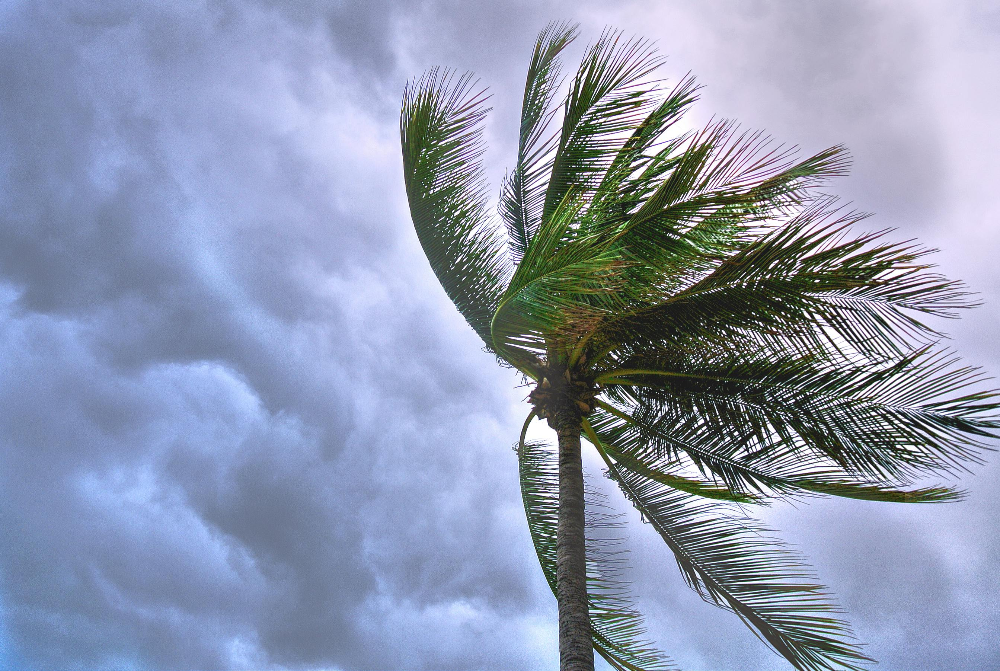

A disaster is an event that causes serious harm to people, buildings, economies, or the environment, and the affected community cannot handle it alone. Natural disasters like avalanches, floods, earthquakes, and wildfires are caused by natural hazards. Human-made disasters like oil spills, terrorist attacks and power outages are caused by people. Nowadays, it is hard to separate natural and human-made disasters because human actions can make natural disasters worse.Disasters usually hit people in developing.
Wind disasters are responsible for tremendous physical destruction, injury, loss of life and economic damage. In this review, we discuss disaster preparedness and effective medical response to wind disasters. The epidemiology of disease and injury patterns observed in the early and late phases of wind disasters are reviewed. The authors highlight the importance of advance planning and adequate preparation as well as prompt and well-organized response to potential damage involving healthcare infrastructure.
A drought is a period of drier-than-normal conditions. A drought can last for days, months or years. Drought often has large impacts on the ecosystems and agriculture of affected regions, and causes harm to the local economy. Annual dry seasons in the tropics significantly increase the chances of a drought developing. Heat waves can significantly worsen drought conditions by increasing evapotranspiration. This dries out forests and other vegetation,and increases the amount of fuel for wildfires.

A wildfire, forest fire, or a bushfire is an unplanned, uncontrolled and unpredictable fire in an area of combustible vegetation. Depending on the type of vegetation present, a wildfire may be more specifically identified as a bushfire, desert fire, grass fire, hill fire, vegetation fire, or veld fire. Modern forest management often engages in prescribed burns to mitigate fire risk and promote natural forest cycles.

A tornado is a violently rotating column of air that is in contact with both the surface of the Earth and a cumulonimbus cloud or, in rare cases, the base of a cumulus cloud. It is often referred to as a twister, meteorology to name a weather system with a low-pressure area in the center around which, from an observer looking down toward the surface of the Earth, winds blow counterclockwise in the Northern Hemisphere and clockwise in the Southern.
Landslides, also known as landslips, or rockslides,are several forms of mass wasting that may include a wide range of ground movements, such as rockfalls, mudflows, shallow or deep-seated slope failures and debris flows. Landslides occur in a variety of environments, characterized by either steep or gentle slope gradients, from mountain ranges to coastal cliffs or even underwater,in which case they are called submarine landslides.Landslides are frequently made worse by human development and resource exploitation.
A typhoon is a tropical cyclone that develops between 180° and 100°E in the Northern Hemisphere and which produces sustained hurricane-force winds of at least 119 km/h (74 mph).The term hurricane refers to a tropical cyclone in the north central and northeast Pacific, and the north Atlantic.In all of the preceding regions, weaker tropical cyclones are called tropical storms. For organizational purposes, the northern Pacific Ocean is divided into three regions: the eastern (North America to 140°W), central, and western.
A volcano is a rupture in the crust of a planetary-mass object, such as Earth, that allows hot lava, volcanic ash, and gases to escape from a magma chamber below the surface. The process that forms volcanoes is called volcanism. On Earth, volcanoes are most often found where tectonic plates are diverging or converging, and because most of Earth's plate boundaries are underwater, most volcanoes are found underwater.Volcanoes can also form where there is stretching and thinning of Volcanoes .
Categories: Sections for different types of natural disasters such as:
• Earthquakes
•Hurricanes / Cyclones / Typhoons
•Floods
•Tsunamis
•Wildfires
•Volcanic Eruptions
•Landslides
•Droughts
•Tornadoes
•Before a Disaster: Tips for preparation (emergency kits, evacuation plans).
•During a Disaster: Guidelines on how to stay safe.
•After a Disaster: Recovery steps, dealing with trauma, and rebuilding.
•Live Maps: Interactive maps showing real-time data on ongoing disasters.
•Weather Forecasts: Links to or embeds from trusted meteorological services.
•Seismic Activity: Real-time earthquake tracking and alerts.
•Hurricane/Typhoon Tracking: Tools to monitor storm paths.